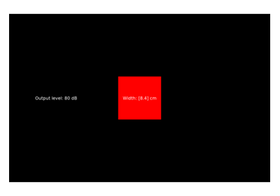
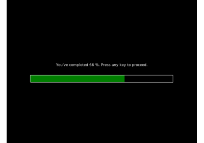

Experiments¶
More specialized experiment code and examples.



Sound level test and visual size calibration
Sound level test and visual size calibration


ProgressBar demo


Adaptive tracking for two trial types and tracker reconstruction from .tab
Adaptive tracking for two trial types and tracker reconstruction from .tab